Матеріали Дентсплай · журнал «ДентАрт» 2013 №3 (72)
Професійна профілактика у практиці стоматолога
DENTAL PROPHYLAXIS IN DENTAL CLINIC
Профілактика — це свого роду філософія, яка охоплює усі сфери життя. Усе наше життя так чи інакше залежить від профілактики. Ми не усвідомлюємо цього, оскільки в повсякденному житті називаємо профілактику безпекою. Якщо згадати піраміду потреб Маслоу — безпека стоїть на другому рівні пріоритетів (після фізіологічних потреб).
Тенденції стоматологічного прийому повинні не лише поліпшувати здоров'я пацієнтів, але й забезпечувати безпеку цього здоров'я. «Більше профілактики — менше втручання!» — ось девіз стоматології XXI століття.
Розвиток тільки реконструктивної стоматології, без уваги до стоматології профілактичної, подібний до того, якби замість вакцини від поліомієліту (сфокусовано на причині) винаходити все нові й нові інвалідні візки для хворих поліомієлітом (сфокусовано на симптомі). Будь-яка із сучасних ортопедичних конструкцій (вінір чи безметалова коронка на імплантаті) — це протез. Інвалідний візок для втраченого здоров'я зуба як органа. Сучасна стоматологія повинна спиратися не лише на реконструктивні методи, але й на біологічні та профілактичні концепції.
Перші питання, які мають турбувати сучасного лікаря: «Як я можу усунути причини захворювання?», «Як я можу запобігти хворобі в майбутньому?»
У нашій клініці проводиться комплексне лікування пацієнтів і професійна профілактика стоїть на першому місці. Таким чином забезпечується добрий результат лікування і всебічна безпека здоров'я пацієнтів.
Завдання гігієніста полягає в тому, щоб на кожному етапі комплексного лікування максимально захистити здоров'я пацієнта від багатьох зовнішніх і внутрішніх чинників, що впливають на якість лікування, а відтак і на кінцевий результат.
У багатьох пацієнтів, та і в більшості лікарів теж, профілактика у стоматології асоціюється тільки з чищенням зубів. Така позиція далека від істини, адже профілактика в стоматології має починатися ще з моменту внутріутробного розвитку плоду, тобто з антенатального періоду розвитку людини.
Лікарі-стоматологи повинні пам'ятати такі правила:
- якщо чистити тільки зуби — це не гарантує здоров'я порожнини рота;
- тільки в окремих і виняткових випадках домашня гігієна порожнини рота забезпечує повну відсутність нальоту;
- на виникнення і розвиток карієсу впливає безліч чинників, які діють на тканини зубів опосередковано, через зубний наліт;
- здорова порожнина рота — це не лише зуби без карієсу;
- мікрофлора пародонтальных кишень недоступна для зубної щітки.
Профілактична стоматологія повинна сприйматися набагато ширше, ніж це прийнято. Ці аспекти професійної профілактики з успіхом впроваджені в усіх європейських країнах, Сполучених Штатах Америки, де такому розділу, як стоматологія профілактична, надається величезної ваги. Програми профілактичного напряму в цих країнах мають державний масштаб, і гігієністи в Європі й Америці дуже популярні у населення, їхня спеціальність затребувана.
Доки такі програми з профілактики у нашій країні проходять стадії розробки або апробації, ми на своєму робочому місці повинні самостійно навчати пацієнтів методам профілактики стоматологічних захворювань, що позитивно позначається не лише на репутації лікаря-стоматолога, але й на лікуванні пацієнтів. Професійна та індивідуальна профілактика в сотні разів зменшують кількість можливих ускладнень після лікування. Це стосується усіх видів стоматологічного лікування: від постановки фотополімерної пломби до складних хірургічних втручань. Елементарне навчання пацієнта догляду за післяопераційною раною має наслідком мінімізацію запальних реакцій у зоні операції. Призначення мінералізуючих засобів пацієнтові з брекет-системою запобігає карієсу під час ортодонтичного лікування.
Необхідно виділяти достатньо часу для спілкування з пацієнтом, навчати необхідним мануальним навичкам. Якщо пацієнт не виконує вимоги з домашнього догляду, неможливо гарантувати результат. Це особливо важливо для пацієнтів з ускладненим пародонтологічним статусом. Незважаючи на простоту призначень, пацієнти частенько не виконують багатьох з них. Призначення стоматолога мають виконуватися з граничною чіткістю.
Найчастіше для профілактики стоматологічних захворювань виконується професійна гігієна порожнини рота. Під час цієї процедури необхідно не тільки якісно очистити зуби від нальоту, але і вжити заходів з профілактики його утворення. Наприклад, полірування пломб, ретельний догляд за проблемними зубами, які мають оголений корінь, догляд за відновленими зубами (коронками, вінірами, імплантатами) та ін.
Особливу увагу під час таких процедур варто приділяти ультразвуковому методу зняття нальоту. Ідеться про вибір між ультразвуковими апаратами. Від цього безпосередньо залежить не лише швидкість роботи, але й профілактика рекламацій під час зняття нальоту і через деякий час після процедури.
Ось уже третій рік ми застосовуємо під час гігієнічного і пародонтологічного прийому магнітостриктивну техніку ультразвукового скейлінгу апаратами Кавітрон компанії Дентсплай, яких у нашій клініці два види. На сьогодні це один з найкращих апаратів у цьому сегменті. Особливою популярністю користується портативний апарат з резервуаром, а саме Кавітрон Селект ЕсПіЕс 30К /Cavitron Select SPS 30K (фото 1).

Це дуже простий у роботі і доступний для застосування апарат. Завдяки особливостям магнітостриктивної технології цих апаратів техніка скейлінгу спрощується настільки, що робота приносить задоволення лікареві і комфорт пацієнтові. У таблиці 1 подано різні модифікації насадок, які задовольнять потреби усіх лікарів-гігієністів. ЕсПіЕс-технологія дозволяє підтримувати ефективність роботи насадки навіть при малих потужностях роботи апарата.
Таблица 1Насадки Кавітрон
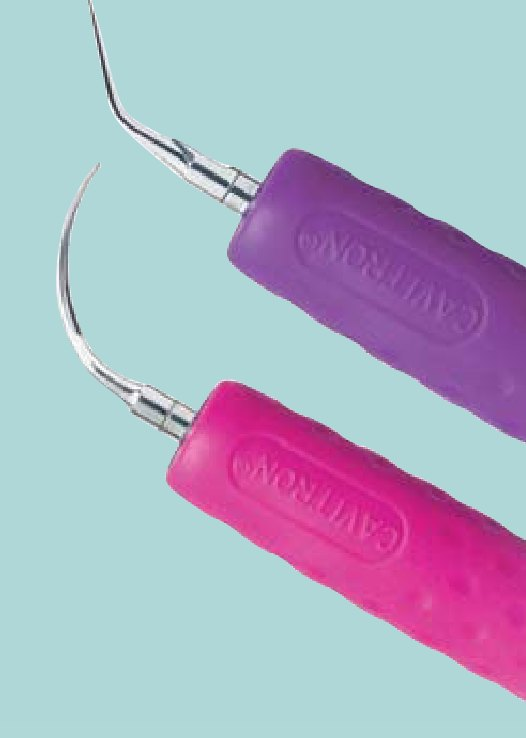
Насадки Беліссіма / Bellissima
- м'який і комфортний тримач насадки дозволяє легко маневрувати у порожнині рота
- 11,5 мм — діаметр ручки — збільшує комфорт лікаря і зменшує втомлюваність руки
- насадки доступні у всіх класичних формах 30 кГц
- яскраві кольори насадок
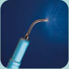
Насадки ЕфЕсАй / FSI
- фокусована подача води на кінчик насадки у місцях, де це необхідно
- відсутність зовнішніх каналів охолодження, не обмежує поле зору
- менша хмара спрею спрощує процедуру скейлінгу
- ідеальні для над'ясенного чищення в усіх ділянках
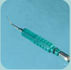
Насадки ЕсЕлАй-Слімлайн / SLI-Slimline
- на 40% тонші, ніж звичайні насадки, менше травмують ясна
- забезпечують оптимальний під'ясенний доступ
- зігнуті насадки L — ліва, R — права легко адаптуються до складної анатомії кореня зуба, можливий доступ до зони фуркації у молярах
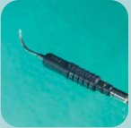
Насадки ТеЕфАй / TFI
- внутрішня подача спрею
- відсутність зовнішніх каналів охолодження не обмежує поле зору
- спрей подається до основи насадки-тримача, що є більш традиційним підходом у скейлінгу
- стійкі до зношування, надійні та ефективні
Важливо зазначити, що ультразвукові насадки мають граничні параметри зносу. Тому їх своєчасна заміна запобігає ушкодженню поверхонь зубів, що очищаються, підвищить ефективність чищення і мінімізує тривалість процедури (мал. 1).
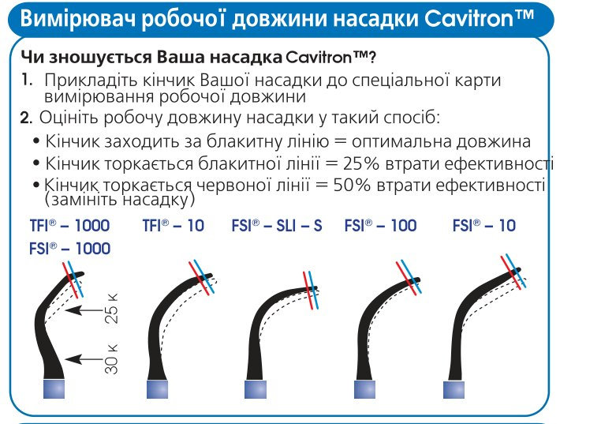
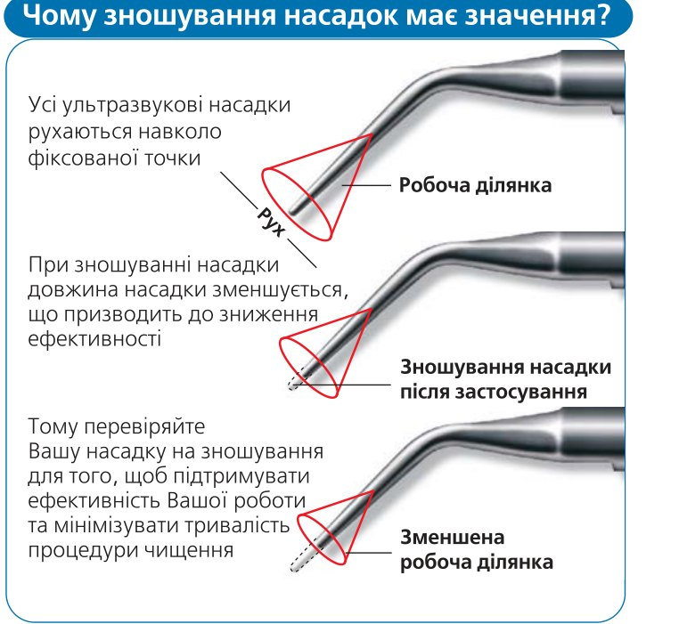
Мал. 1.
Тепер можна сміливо назвати професійну гігієну порожнини рота процедурою з розряду приємних. Тому пацієнти часто порівнюють кабінет професійної гігієни з кабінетом косметолога, де все налаштовує до розслаблення в кріслі. Іноді пацієнти під час чищення засинають. Звичайно, не йдеться про первинну процедуру складних пацієнтів, які мають негативний пародонтологічний статус або підвищену чутливість зубів. Але саме завдяки магнітостриктивній технології ультразвуку навіть такі складні скейлінги стали набагато приємнішими для пацієнтів. У випадках, які раніше передбачали анестезію для скейлінгу в складній ділянці, сьогодні можна провести скейлінг, не використовуючи знеболення, оскільки Кавітрон дуже м'яко і делікатно знімає наліт, не викликаючи больових і дискомфортних відчуттів у пацієнта. Підігрівання води в наконечнику дозволяє пацієнтам з підвищеною чутливістю зубів на термічні подразники абсолютно спокійно, із задоволенням проходити цю процедуру.
Наступне складне питання для гігієніста — це догляд за відреставрованими зубами. Ідеться про грамотне зняття нальоту із зубів, які покриті штучними конструкціями: вінірами, коронками, брекетами, пломбами, а також про імплантати. Такі зуби абсолютно неприпустимо чистити металевими насадками для ультразвукових апаратів. Це підтверджує дисертаційна робота лікаря-стоматолога С.В. Введенської, яка досліджувала вплив різних типів ультразвукових апаратів на штучні поверхні зуба при їх очищенні від нальоту. На мікрофотографії (фото 2-4) керамічний вінір після застосування металевих насадок від різних ультразвукових апаратів. У цьому випадку чітко видно сколи і тріщини на поверхні вініра, причому при використанні п'єзоелектричного апарата ці сколи значно більші і глибиною, і площею. Який же вихід? Використання насадки з безпечним кінчиком для очищення таких зубів.
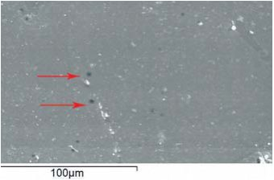
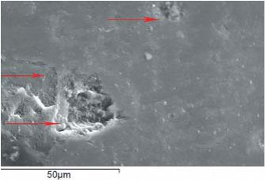
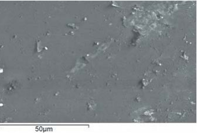
В апараті Кавітрон є спеціальна насадка з одноразовими пластиковими ковпачками, які обережно знімають наліт з таких зубів, не ушкоджуючи структуру як зуба, так і матеріалу, з якого відновлений цей зуб (фото 5). При цьому чищення зубів, як і раніше, залишається м'яким і атравматичним. Цією насадкою можна користуватися при підвищеній чутливості зубів у пацієнта, за наявності брекет-систем, тимчасових коронок.
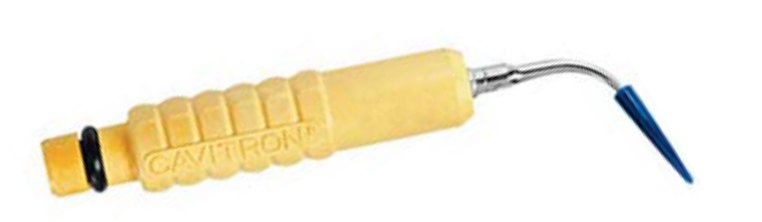
Клінічний приклад
До нас у клініку звертаються пацієнти з метою профілактичної гігієни порожнини рота. Останнє відвідування гігієніста від 6 місяців до року тому. Пацієнти часто мають керамічні конструкції фронтальних зубів нижньої щелепи, керамічні вініри, патологічну стертість зубів і т. д. На фото 6-7 пацієнтові з керамічніми вінірами передніх нижніх зубів проведено професійну гігієну порожнини рота, яка включає ультразвуковий скейлінг (апарат Кавітрон Селект ЕсПіЕс) з використанням жовтої насадки, повітряно-абразивну обробку, полірування зубів, антисептичну обробку порожнини рота і мінералізацію зубів. У таких випадках, безпечно працюючи ультразвуковою насадкою, можна не боятися сколоти вініри, оскільки насадка має пластиковий кінчик, що робить її дію м'якою, але в той же час результативною для лікаря і пацієнта.
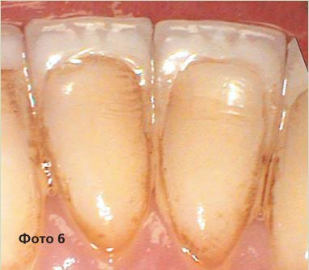
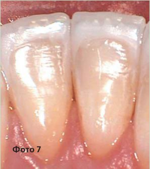
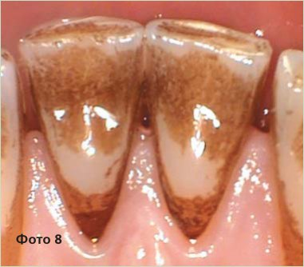
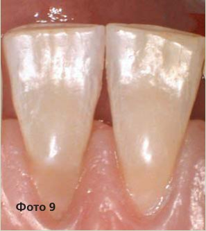
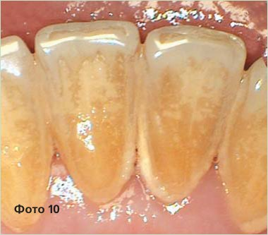
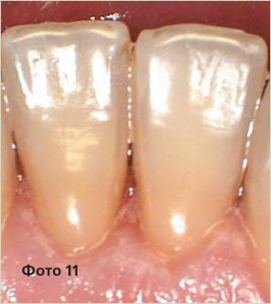
Для пацієнтів профілактичне чищення стало приємною і абсолютно безболісною процедурою. Ультразвуковий скейлінг при правильному підборі апарата і техніки роботи став абсолютно безпечним для мене і моїх пацієнтів (фото 8-11). Результат такої вигідної співпраці з пацієнтами — їхні регулярні візити на прийом. Єдине, що хотілося б підкреслити: дуже важливо досконально вивчити, як правильно користуватися тим чи іншим інструментом. Маючи найсучаснішу апаратуру, треба знати всі її можливості і в повному обсязі їх використовувати.
Література
- Дмитриева Л.А. Современные аспекты клинической пародонтологии. —М., 2001. —С.3.
- Введенская С.В. Изучение влияния ультразвуковых колебаний на различные реставрационные конструкции //Дисс. ... канд. мед. наук, —М., —2011.
- Москалев К.Е. Сравнительная оценка различных методов инструментальной обработки поверхности корней зубов при лечении воспалительных заболеваний пародонта // Дисс. ... канд. мед. наук. М., —2005.
- Грудянов А.И., Москалев К.Е., Сизиков А.В. Изучение состояния поверхности придесневой области пломб после инструментальной обработки корня различными методами//Пародонтология. —2004. —№2 (31). —С. 27-32.